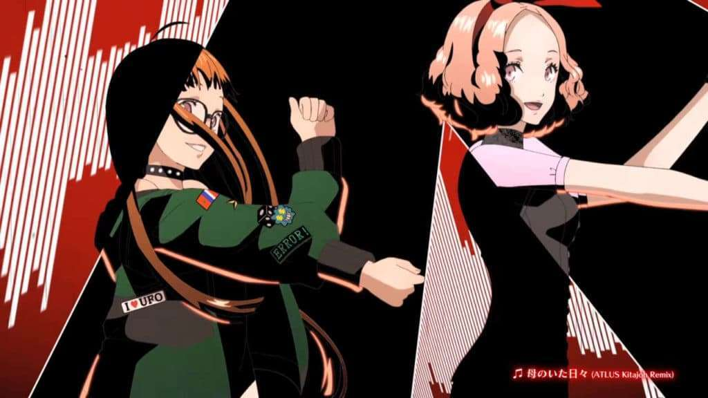

Futaba _ Webs 🕸🕸🎃🕸🕸
Hacking PERSONA! 🕸🕸🎃🕸🕸
Today, I’m going to go over a fun topic, one that is surprisingly not well talked about enough that quite frankly should be. I’m going to go over the various types of hackers, or “hats” to be more specific. There are seven types: white, black, gray, green, blue, red, and purple. Each hat has an agenda and purpose and plays a HUGE role in protecting our digital landscape.
🎃 Article 🎃 Glossary 🎃 Catalog 🎃 Home 🎃 Search Mode🎃 Article Glossary
🕸 Synopsis 🕸
Today, I’m going to go over a fun topic, one that is surprisingly not well talked about enough that quite frankly should be. I’m going to go over the various types of hackers, or “hats” to be more specific. There are seven types: white, black, gray, green, blue, red, and purple. Each hat has an agenda and purpose and plays a HUGE role in protecting our digital landscape.
🕸 Article Topics 🕸
I'll be discussing the following topics in order: 🎃 Premise 🎃 White Hat Hackers 🎃 Black Hat Hackers 🎃 Gray Hat Hackers 🎃 Red Hat Hackers 🎃 Green Hat Hackers 🎃 Script Kiddies 🎃 Blue Hat Hackers 🎃 Purple Hat Hackers You can click on any of the topics to simply check that one out if it interests you! NOTE: Articles are read from LEFT to RIGHT via 2 columns! Read the first column all the way down and then move to the next one!
🕸 Key Links 🕸
Here's a quick run down on all the main links that are in the article in case you want to check them out first. 🎃 LinkedIn Version
🎃 Hacking PERSONA!
Premise 🕸🕸🎃🕸🕸
I’m going to go over the various types of hackers, or “hats” to be more specific. There are seven types: white, black, gray, green, blue, red, and purple. Each hat has an agenda and purpose and plays a HUGE role in protecting our digital landscape.
I'm also going to go over what a script kiddie is since there is A HUGE difference between them and one particular hat that is apart of the main category that is going to be discussed today.
You’ll also get more in depth as to why my head line says I am a “Gray Hat Hacker”. A lot of people, and I’ve talked with a few, have no idea what the hat’s actually stand for and why we use them.
It’s important, especially if you are going to be a part of hacker culture. It will come up in topics, so it’s best you know what they all stand for.
White Hat Hackers 🕸🕸🎃🕸🕸
White hat hackers are basically the good guys, the Cyber Security professionals that help defend various system and business infrastructures, as well as being responsible for the very security that is implemented in them as well. Without them, there would be no form of security in any and all forms of technology, and we would all be exposed to various threats. This is why “Cyber Security” exists. If you are in Cyber Security, then by default you are a white hat hacker, unless you identify otherwise.
They are also penetration testers that focus on exploiting a system in order to find vulnerabilities in a system, reporting it so that the side that defends can mitigate the threat so that real threat actors are unable to take advantage of it. This is typically done in the fashion of finding the flaw in the system before someone else does.
This hat is split into 2 unique categories, that I’m pretty sure you might already be familiar with, red team and blue team.
Red teamers, are the offensive security professionals like penetration testers for example who attack to find weaknesses in the system, and report them.
Blue teamers, are the defenders, who specialize in the core implementation of security remedies that help protect system infrastructures, as well as being first responders to various security breaches that occur within business infrastructures.
Each team has their own set of specialties and roles that dive deeper into the matter of what they do, but I'll leave that for another article explaining the both of them, so you can get a better idea of where you might want to start out in Cyber Security.
Black Hat Hackers 🕸🕸🎃🕸🕸
These are the bad guys, legit threat actors that seek to exploit a system for personal game: money, data, fame, etc. Unlike white hat hackers who have major restrictions and limitations on what they can and can’t do when conducting an official penetration test, black hat hackers don’t have this restraint. They exploit systems in any and all various ways, which is why we have to keep evolving our mitigation tactics in order to neutralize cyber crime. They are the main reason we are in an ever ending fight to protect the digital landscape.
They also tend to operate on places like the dark web, providing illegal services from various means based on their skill set.
Gray Hat Hackers 🕸🕸🎃🕸🕸
White hat hackers are basically the good guys, the Cyber Security professionals that help defend various system and business infrastructures, as well as being responsible for the very security that is implemented in them as well. Without them, there would be no form of security in any and all forms of technology, and we would all be exposed to various threats. This is why “Cyber Security” exists. If you are in Cyber Security, then by default you are a white hat hacker, unless you identify otherwise.
They are also penetration testers that focus on exploiting a system in order to find vulnerabilities in a system, reporting it so that the side that defends can mitigate the threat so that real threat actors are unable to take advantage of it. This is typically done in the fashion of finding the flaw in the system before someone else does.
This hat is split into 2 unique categories, that I’m pretty sure you might already be familiar with, red team and blue team.
Red teamers, are the offensive security professionals like penetration testers for example who attack to find weaknesses in the system, and report them.
Blue teamers, are the defenders, who specialize in the core implementation of security remedies that help protect system infrastructures, as well as being first responders to various security breaches that occur within business infrastructures.
Each team has their own set of specialties and roles that dive deeper into the matter of what they do, but I'll leave that for another article explaining the both of them, so you can get a better idea of where you might want to start out in Cyber Security.
Red Hat Hackers 🕸🕸🎃🕸🕸
Now, you might have heard the term red hat before, typically when it applies to the Linux version, but did you know, it’s ACTUALLY a real hat for us?
Red hat hackers are a white hat hackers that hunt down black hat hackers. In case you haven't noticed, black hat hackers aren’t well received.
Green Hat Hackers 🕸🕸🎃🕸🕸
For those of you who are new to hacking, this would be where you currently lay.
Green hat Hackers are newcomers that are honing their skills.
Script Kiddies 🕸🕸🎃🕸🕸
NOT to be confused for a green hat, who actually knows a thing or two about hacking, script kiddies are hackers, if you could call them that, that rely on someone else's tools and techniques without proper understanding to hack people.
The good news about these types of hackers is they will ALWAYS be predictable and are easy to counter and neutralize.
Blue Hat Hackers 🕸🕸🎃🕸🕸
A common trick that a lot of people like to use in order to prevent unauthorized network breaches, is they like to hide their SSID’s which is the name of the network. This is effective in that you can hide SSID information from common means of exposure, like the GUI you use when selecting a wireless access point to communicate with.
The problem with this is it can easily be bypassed by the same method mentioned in option #2 of how to bypass MAC address filtering.
Your SSID is also broadcasted along with any and all MAC address information that is sent out in data packets. They have to be, otherwise our IoT devices would be unable to pick them up and identify them. THERE IS ALWAYS A WAY TO BYPASS ANYTHING! NOTHING IS 100 PERCENT SECURE!
Today’s positive bonuses will focus more on how to defend against MAC address filtering bypasses, preventing an attacker from breaching the network via this security method.
Purple Hat Hackers 🕸🕸🎃🕸🕸
These hackers are basically revenge hackers, or in a sense, suicide hackers depending on the situation.
They can also be script kiddies and or new hackers that are taking revenge on someone else.
They can also be white hat hackers, or disgruntled employees that have gone rogue, which can pose a real threat especially when it’s from inside the main infrastructure.
This term can also be for hackers that are contractors, invited to test for security flaws within software products that have yet to be released. They are hired based on their reputational value.
If you enjoyed this post give it a thumbs up! I’ll be keeping track of whose reacting from now on as there is a “special” reason for it. Just know the more you support my content the more there is in stored!
- The Hacker Who Laughs 🕸🕸🎃🕸🕸
